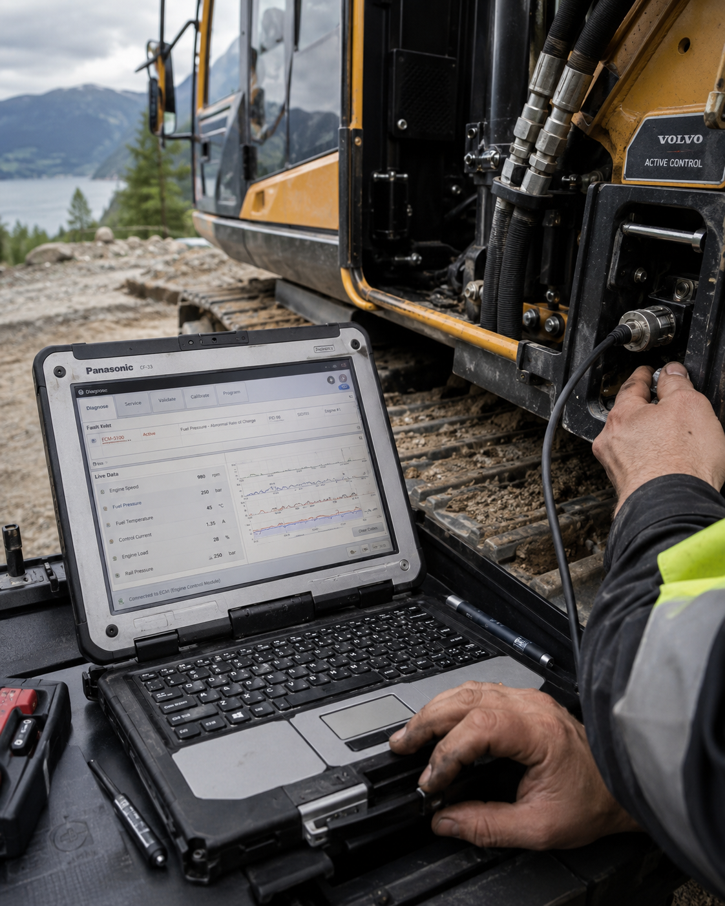
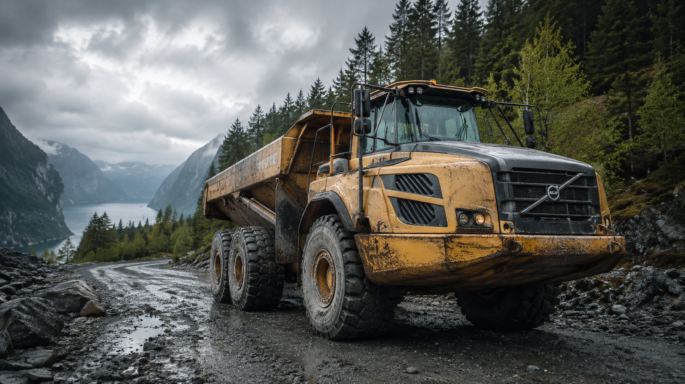
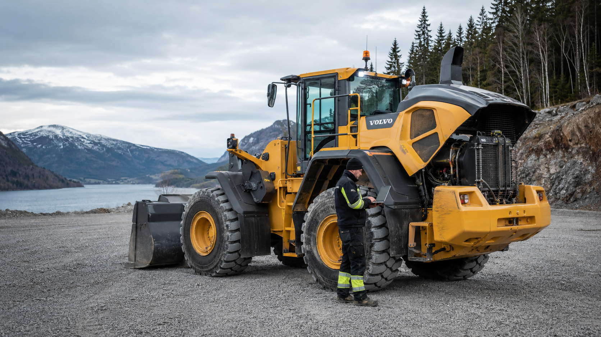
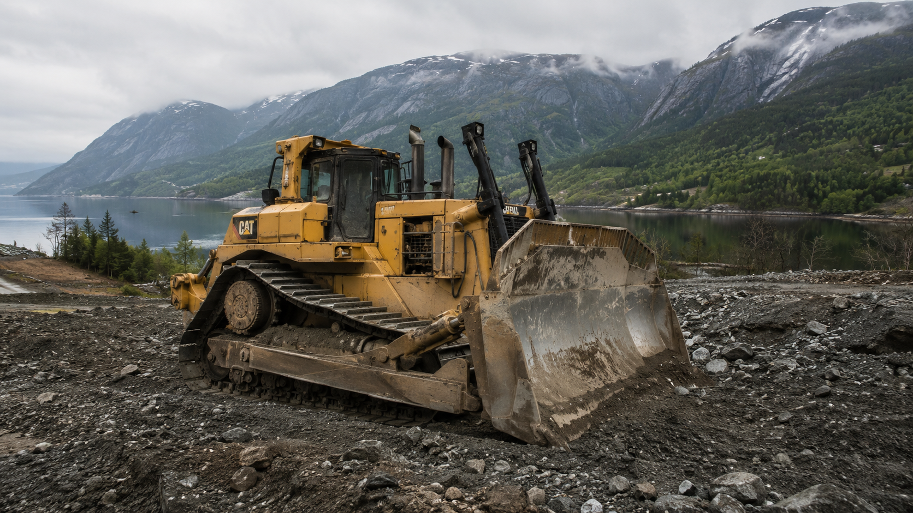
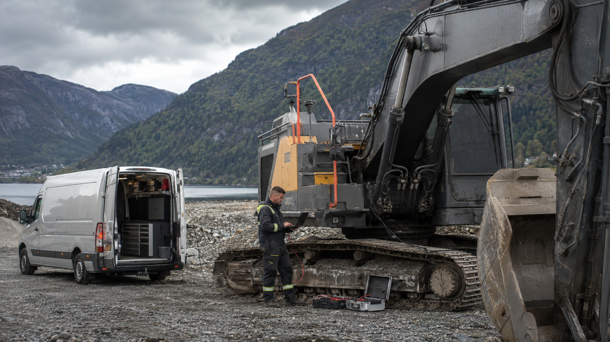

Ambulerande diagnose og feilsøking på gravemaskiner, hjullastarar, dumpere, bulldosarar, traktorar og tunge dieselmaskiner – direkte der maskina står.
For entreprenørar, maskineigarar, landbruk og industri på Vestlandet.
Store maskiner skal ikkje stå stille medan du ventar på tilfeldige delar, usikre feilkodar eller gjetting frå sidelinja.
Maskindiagnose.no tilbyr ambulerande diagnose og feilsøking på anleggsmaskiner, landbruksmaskiner og tunge køyretøy – direkte der maskina står.
Vi hjelper entreprenørar, maskinførarar, bønder og bedrifter med å finne årsaka til feil raskare, redusere unødvendig nedetid og ta betre avgjerder før dyre delar blir bytta.
Mål først. Skru etterpå.
Ein feilkode fortel kvar systemet reagerer. Den fortel ikkje alltid kvifor problemet oppstod.
Derfor handlar god diagnose ikkje berre om å lese av feilkodar. Det handlar om å forstå samanhengen mellom motorstyring, sensorar, utsleppssystem, driftshistorikk, belastning og symptoma føraren faktisk opplever.
Vi ser på heilskapen før vi konkluderer.

Nødmodus, redusert effekt, feilkodar og gjentakande varsel.
Kontroll av partikkelfilter, differansetrykk, sotbelastning og regenereringsproblem.
Feilsøking på EGR, innsug, luftmengde, temperatur og relaterte sensorverdiar.
Diagnose av AdBlue-system, SCR, NOx-sensorar, dosering og etterbehandling.
Tolking av måleverdiar, avvik og samanhengar før dyre delar blir bytta.
Feilsøking når maskina er tungstarta, dau, ujamn eller manglar kraft.
Kontroll av styreeiningar, CAN-kommunikasjon og systemfeil.
Praktisk vurdering før du brukar pengar på feil del.
Vi kjem ut til deg på Vestlandet og utfører diagnose på maskiner der problemet faktisk er.
Dette er spesielt aktuelt for maskiner der transport til verkstad er dyrt, tungvint eller unødvendig.



Når ei gravemaskin, hjullastar eller dumper står stille, stoppar ikkje berre maskina.
Jobben stoppar. Folk ventar. Framdrifta ryk. Kostnadane kjem uansett.
Derfor er rask og ryddig feilsøking ofte mykje billegare enn å byte delar på mistanke.
Vi hjelper deg å få oversikt:

Du slepp unødvendig transport, venting og logistikk der det er mogleg å feilsøke på staden.
Dette handlar ikkje om å imponere med datamaskin. Det handlar om å få maskina raskast mogleg tilbake i fornuftig drift.
Med lang bakgrunn frå mekanikk, bilelektronikk, motorstyring, tuning og diagnose forstår vi både datalista og den praktiske kvardagen ute på jobb.
Feilkodelesing er berre starten. God diagnose krev måling, tolking og systemforståing.
Du bør ta kontakt dersom:
For raskare hjelp er det fint om du har klart:
Send gjerne bilde eller video av feilmeldingar, display og maskinplate.
Vi hjelper kundar på Vestlandet.
Aktuelle område inkluderer mellom anna:
Har du maskin som står, ta kontakt – så ser vi kva som er praktisk mogleg.
Send oss registreringsnummer dersom maskina har det, maskinmodell, feilmelding eller bilde, eventuelle feilkodar og kvar maskina står. Då får du ei ryddig vurdering av neste steg.
Telefon: 948 09 710 | E-post: vest@tuningservice.no